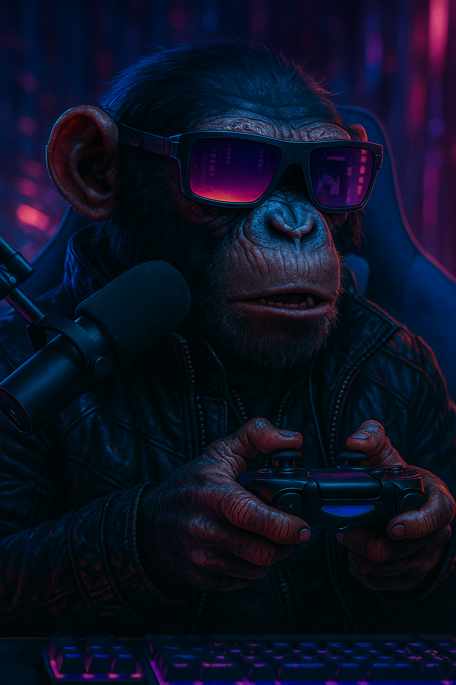

Olá, eu sou Rafael Poddis!
Salve salve! Gosto muito de jogar, se for jogo online tem que ser com os cria, sozinho é paia. Na maior parte do tempo eu sou bem calmo e tranquilo. Gosto também de ver séries e filmes, como Star Wars, sim, por causa do Obi-Wan. Tenho algum conhecimento em programação, mas nada muito avançado, digamos que dá pra brincar um pouco, como fazer esse site. Começei a fazer live na Twitch em Abril de 2026, aí decidi fazer esse site pra quem quiser me conhecer um pouco mais. Abaixo tem os links para minhas redes sociais, segue lá, no instagram, principalmente, que eu aviso quando tem live.

Links
Jogos que eu gosto e recomendo
Singleplayer

God of War
God of War (2018) é um jogo incrível que eu gostei principalmente por causa da história relacionada a mitologia nórdica. A saga toda do Kratos é dahora, mas esse jogo de 2018 e o Ragnorok são meus favoritos porque eu gosto muito de mitologia nórdica. Se pensar em jogar, recomendo jogar o 1, 2 e 3 pra entender melhor a história.

Hollow Knight e Hollow Knight: Silksong
O que mais gostei de Hollow Knight foi a jogabilidade. Pra ser sincero, na primeira vez que joguei eu não prestei muita atenção na história, mas eu tinha um amigo acompanhando a minha jogatina e ele foi me falando as paradas. Acabou que no final eu gostei muito e acabei ficando empolgado para jogar a continuação, Hollow Knight: Silksong, que eu recomendo bastante também.

Outer Wilds
Esse foi um jogo que eu não esperava muito, mas no final entregou tudo. A história é sensacional e o ambiente é muito bem criado. Infelizmente é o tipo de jogo que só se joga uma vez, porque a graça é ir descobrindo as coisas, mas mesmo assim eu recomendo muito. Além do ambiente, a trilha sonora do jogo é incrível. Se você pudesse jogar um jogo desses três que te falei, eu recomendo esse.